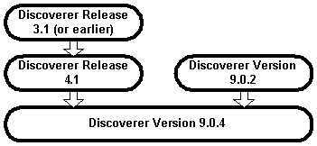
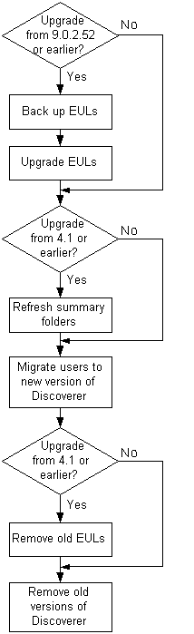
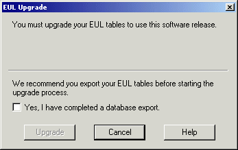
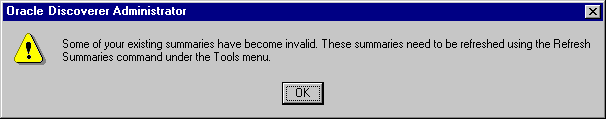

10g (9.0.4)
Part Number B10270-01
Library |
Contents |
Index |
| Oracle Discoverer Administrator Administration Guide (Online Help) 10g (9.0.4) Part Number B10270-01 |
|
This chapter explains how to upgrade to this version of Discoverer and contains the following topics:
The upgrade path to choose depends on the version of Discoverer you are upgrading from, as follows:
The different upgrade paths are shown in the flowchart below:

Before you can upgrade to Discoverer Version 9.0.4, Oracle Developer Suite (including Discoverer Administrator Version 9.0.4) must already be installed.
In addition, to upgrade End User Layers, the EUL owners must have the following privileges:
If upgrading to an Oracle 8.1.7 (or later) database, summaries are implemented as materialized views and the EUL owners therefore require the following privileges:
Important: To maintain the consistency of data transferred to upgraded EULs, it is very important that no Discoverer Administrator sessions are opened on the earlier version of the EUL while the upgrade is in progress.
Specific versions of Discoverer are compatible with particular EUL versions.
Discoverer end users will be unable to connect to an EUL that is not compatible with the version of the Discoverer product that they are using.
Note that Discoverer version numbers and EUL version numbers are not totally synchronized, as follows:
If you attempt to connect to a Release 4.1 EUL or a Version 5.0.0.x EUL using Discoverer Administrator Version 9.0.4, you will be prompted to upgrade the EUL to the current version.
For more information about compatibility between Discoverer versions and EUL versions, see the Discoverer Release Notes.
During the upgrade process, you will perform a number of steps. Some of these steps will depend on the version of Discoverer you are upgrading from.
Below is an overview of the steps that you will follow:
The above steps are shown in the flowchart below:

Depending on how the Discoverer system has been set up, there might be other issues to consider (for more information, see "Notes about upgrading to Discoverer Version 9.0.4").
There is no direct upgrade path from Discoverer Release 3.1 (or earlier) to Discoverer Version 9.0.4. Instead, use the following upgrade path:
This section explains how to upgrade to Discoverer Version 9.0.4, and includes the following topics:
Before you do anything else, you will take a back up of the Release 4.1 EUL as described in the following upgrade step:
To use Discoverer Version 9.0.4, Discoverer users must have access to a Discoverer Version 5 End User Layer (EUL). If users have been using a Discoverer Release 4.1 EUL, that EUL must be upgraded before the users can access it using Discoverer Version 9.0.4.
The EUL upgrade process creates new Version 5 EUL tables, and then copies metadata from the Release 4.1 EUL tables into the new tables. Existing users can continue working with Discoverer Release 4.1 during the upgrade process because the upgrade process is non-destructive (i.e. the Release 4.1 EUL tables are not deleted).
Follow the upgrade steps below to upgrade the EUL using Discoverer Administrator:
When you are satisfied that all Release 4.1 EULs have been successfully upgraded, follow the upgrade steps below:
When you have upgraded all users and removed all Release 4.1 EULs, follow the upgrade step below:
Before you can upgrade a Discoverer Release 4.1 EUL to a Discoverer Version 5 EUL, you must first back up the EUL tables by exporting the EUL owner using the standard database export utility.
How to export the EUL owner will depend on:
We recommend that the version of the Oracle database and the version of the Oracle database client software installed on your machine are the same. If the versions are not the same (e.g. if the EUL is on an Oracle8i database and Oracle9i client software is installed on your machine), you might not be able to follow the instructions below. If you are unable to export the EUL, contact your database administrator and ask them to export the EUL for you.
To back up a Release 4.1 EUL (assuming the EUL resides on an Oracle9i database and you are using a machine on which you have installed Oracle Developer Suite), follow the steps described in Chapter 3, "How to export an EUL using the standard database export utility".
Having backed up the Release 4.1 EUL, you are now ready to upgrade it to Version 5.
Having backed up a Release 4.1 EUL, you can now upgrade the EUL to Version 5. To upgrade an EUL, you simply open the EUL in the latest version of Discoverer Administrator by following the instructions below. The same database user that owned the Release 4.1 EUL will own the Version 5 EUL.
Note that Release 4.1 end users are not affected by the upgrade and can continue using the Release 4.1 EUL. However, any changes (e.g. modifications to workbooks) that end users make in the Release 4.1 EUL after the upgrade process has started will not be present in the Version 5 EUL.
Important: To maintain the consistency of data transferred to the Version 5 EUL, it is very important that no Discoverer Administrator sessions are opened on the Release 4.1 EUL while the upgrade is in progress.
To upgrade a Release 4.1 EUL to Version 5:
The EUL Upgrade dialog is displayed.

Note: If you have not already exported the Release 4.1 EUL, click Cancel and export the EUL (for more information, see "Upgrade step 1: Back up the Release 4.1 EUL").
The EUL Upgrade progress bar displays the status of the upgrade.
Any messages that are output during the upgrade process are displayed in the End User Layer Upgrade Log dialog. For more information about messages that refer to invalid characters in identifiers, see "Notes about upgrading identifiers containing invalid characters".
If there are summary folders in the upgraded EUL, the following message dialog is displayed, indicating that the summary folders are invalid and must be refreshed.

The Load Wizard is displayed.
The EUL upgrade is complete. You can use this EUL to connect to the database using Discoverer Administrator Version 9.0.4.
If there are summary folders in the EUL you have upgraded, you must refresh the summary folders.
The definitions of any Release 4.1 summary folders are copied into the new Version 5 EUL and the status of any upgraded summary folders is changed to "Refresh Required". The database tables or materialized views on which the upgraded summary folders are based are not actually created until the summary folders are refreshed.
When you refresh upgraded summary folders:
When the summary tables or materialized views have been created, Discoverer can then use the summary folders to optimize queries.
For more information about summary folders, summary tables, and materialized views, see Chapter 13, "Managing summary folders".
To refresh upgraded summary folders:
You will have to refresh all of the summary folders before Discoverer can use them. However, depending on the amount of data, you might not want to refresh all the summary folders at the same time.
For any summary folders not based on external summary tables, the Refresh Summaries dialog is displayed.

You can refresh summary folders immediately or specify a time for the refresh. Depending on the amount of data, you might want to schedule the refresh for an off-peak time.
When you have upgraded all Release 4.1 EULs and you are satisfied that the upgraded EULs are ready for use, migrate Discoverer users to Discoverer Version 9.0.4.
While you are rolling out the migration across the organization, users can continue to work with Discoverer Release 4.1 (accessing the original EUL) or with Discoverer Version 9.0.4 (accessing the upgraded EUL). However, note that any changes you make using one version of Discoverer Administrator will not be available to users of the other version of Discoverer.
How to migrate Discoverer users to Discoverer Version 9.0.4 will depend on the Discoverer tools they use.
To migrate Discoverer Plus and Discoverer Viewer users
To migrate Discoverer Desktop users:
The Oracle Installer automatically installs Discoverer Desktop Version 9.0.4 in a separate directory from Discoverer Release 4.1.
When a user logs into Discoverer for the first time (i.e. using Discoverer Plus, Discoverer Desktop, or Discoverer Viewer), Discoverer searches for any Version 5 EULs that the user has access to, as follows:
When you have upgraded the Release 4.1 EULs and migrated all users to Discoverer 9.0.4, you can remove the Release 4.1 EULs.
Initially you will probably want to just prevent access to the original EULs and only allow users to access the upgraded EULs. When you are confident that all users are successfully accessing the upgraded EULs, you can remove the old EULs.
A SQL script called eul4del.sql is shipped with Discoverer that enables you to remove Release 4.1 EULs and associated tables (including summary tables/materialized views).
Note the following:
To remove a Release 4.1 EUL using the eul4del.sql script:
SQL> @<ORACLE_HOME>\discoverer\util\eul4del.sql
The deinstallation script removes a specified Release 4.1 EUL and any associated database objects, including summary tables/materialized views.
A summary of the deinstallation script is displayed:
Removing summary refresh jobs ... Discoverer End User Layer Database Tables (4.x Production) deinstallation This script will remove a version 4.x EUL and any associated database objects. It will: 1. Ask you to enter the ORACLE SYSTEM password and connect string. 2. Ask you to enter the name and password of the 4.x EUL owner. 3. Confirm that you wish to drop the 4.x EUL. 4. Check for database jobs for users other than the 4.x EUL owner. 5. Confirm whether to drop 4.x tutorial tables (if any). 6. Log in as the 4.x EUL owner and remove any database jobs for it. 7. Remove all summary database objects for the 4.x EUL. 8. Remove all scheduled workbook database objects for the 4.x EUL. 9. Remove the 4.x EUL tables. 10. Remove user and public synonyms (if any) for the 4.x EUL tables.
If you are not sure of the password of the SYSTEM user, contact your database administrator.
The following text is displayed:
Preparing to remove EUL 4.x owned by <username> at <today's date> If you continue, the specified 4.x End User Layer will be PERMANENTLY dropped. All End User Layer information and workbooks stored in the database will be deleted. Any 5.x End User Layer tables will NOT be affected by this process. THIS PROCESS IS NON-REVERSIBLE. Do you wish to continue [N]:
Note that the EUL removal process is not reversible.
Y to confirm that you want to drop the Release 4.1 EUL.
If the script detects the Release 4.1 tutorial tables, you are prompted to confirm whether to delete the tables.
During the process of dropping the Release 4.1 EUL, the script will check whether there are any summary folders owned by users other than the EUL owner.
Removing summary refresh jobs ... Dropping internally managed summary data ... Removing scheduled workbook jobs ... Dropping scheduled workbook data ... Dropping 4.x End User Layer Tables ... Removing public synonyms (if any) ... Connected. Finished removing 4.x End User Layer.
The following users have managed summaries which must be dropped before this EUL can be deinstalled: User: SCOTT, Summary: Scott's Summary User: FRED, Summary: Fred's Summary etc. Quitting - no changes made.
If this message appears, the specified users must log into Discoverer Administration Edition Release 4.1 and remove the specified summary folders (for more information, see Chapter 14, "How to delete summary folders"). When these summary folders have been dropped, rerun the script eul4del.sql in order to drop the Release 4.1 EUL.
When you and your users have connected successfully to Discoverer Version 9.0.4 and you are confident that summary folders are working correctly, you can remove Discoverer Release 4.1 products (i.e. Discoverer Administration Edition, Discoverer Desktop Edition) from client machines.
To remove Discoverer Release 4.1 products from client machines:
The Oracle Installer starts automatically. If the Installer does not start automatically, access the CD-ROM with Windows Explorer and run setup.exe from the CD root directory.
Note that any workbooks created in Discoverer Release 4.1 and saved in the <ORACLE_HOME>\discvr4 directory will not be deleted.
This section explains how to upgrade from Discoverer 9.0.2 to 9.0.4 and contains the following topics:
"About upgrading from Discoverer Version 9.0.2 to Discoverer Version 9.0.4"
"Upgrade step 1: Back up the Version 5 EUL"
"Upgrade step 2: Upgrade the Version 5 EUL"
"Upgrade step 3: Migrate users to Discoverer Version 9.0.4"
"Upgrade step 3: Migrate users to Discoverer Version 9.0.4"
"Upgrade step 4: Remove Discoverer Version 9.0.2 products from client machines"
To use Discoverer Version 9.0.4, Discoverer users must have access to a Discoverer Version 5 End User Layer (EUL).
If users have been using Discoverer Version 9.0.2 successfully, they already have access to a Version 5 End User Layer. However, depending on the Discoverer Version 9.0.2 patches that have been applied, the existing Version 5 EUL might need upgrading to Version 5.0.2.
For each EUL that needs upgrading, follow the upgrade steps below:
When you are satisfied that any Version 5 EULs that need upgrading have been upgraded, follow the upgrade step below:
When you have upgraded all users, follow the upgrade step below:
Depending on the version of Oracle Discoverer you are upgrading from, you might need to back up the EUL as follows:
If you do need to upgrade the EUL, you must first back up the EUL tables by exporting the EUL owner using the standard database export utility.
How to export the EUL owner will depend on:
We recommend that the version of the Oracle database and the version of the Oracle database client software installed on your machine are the same. If the versions are not the same (e.g. if the EUL is on an Oracle8i database and Oracle9i client software is installed on your machine), you might not be able to follow the instructions below. If you are unable to export the EUL, contact your database administrator and ask them to export the EUL for you.
To back up a Version 5 EUL (assuming the EUL resides on an Oracle9i database and you are using a machine on which you have installed Oracle Developer Server), follow the steps described in Chapter 3, "How to export an EUL using the standard database export utility".
Having backed up the EUL, you are now ready to upgrade it.
To upgrade an EUL, you simply open the EUL in the latest version of Discoverer Administrator by following the instructions below.
Note that after you have upgraded the EUL, users of Discoverer Version 9.0.2.52 (or earlier) will not be able to use the upgraded EUL.
To upgrade a Version 5 EUL to the latest version:
The EUL Upgrade dialog is displayed.
Notes:
The EUL Upgrade progress bar displays the status of the upgrade.
Any messages that are output during the upgrade process are displayed in the End User Layer Upgrade Log dialog. For more information about messages that refer to invalid characters in identifiers, see "Notes about upgrading identifiers containing invalid characters".
The Load Wizard is displayed.
The EUL upgrade is complete. You can use this EUL to connect to the database using Discoverer Administrator Version 9.0.4.
Having upgraded Version 5 EULs (if necessary), you can migrate Discoverer users to Discoverer Version 9.0.4 as follows:
How to migrate Discoverer users to Discoverer Version 9.0.4 will depend on the Discoverer tools they use.
To migrate Discoverer Plus and Discoverer Viewer users
To migrate Discoverer Desktop users:
The Oracle Installer automatically installs Discoverer Desktop Version 9.0.4 in a separate directory from Discoverer Version 9.0.2.
When a user logs into Discoverer Version 9.0.4 for the first time (i.e. using Discoverer Plus, Discoverer Desktop, or Discoverer Viewer), Discoverer searches for any Version 5 EULs that the user has access to, as follows:
After Discoverer Version 9.0.4 is installed and a connection to the database has been established successfully through a Version 5 EUL, you can remove Discoverer Version 9.0.2 products (i.e. Discoverer Desktop Edition, Discoverer Administration Edition) from client machines.
When you and your users have connected successfully to Version 5 EULs using Discoverer Version 9.0.4, you can remove Discoverer Version 9.0.2 products (i.e. Discoverer Administration Edition, Discoverer Desktop Edition) from client machines.
To remove Discoverer Version 9.0.2 products from client machines:
The Oracle Installer starts automatically. If the Installer does not start automatically, access the CD-ROM with Windows Explorer and run setup.exe from the CD root directory.
Note that any workbooks created in Discoverer Version 9.0.2 and saved in the <ORACLE_HOME>\discoverer902 directory will not be deleted.
When upgrading an Oracle Applications EUL, be aware that the MAXEXTENTS storage property of the EUL tables might have been increased to a value greater than the MAXEXTENTS storage property of the tablespace in which the EUL was created. If this situation exists, any attempt to upgrade the EUL will fail (e.g. with an ORA01631 error) because:
If the MAXEXTENTS value of the EUL tables is greater than the MAXEXTENTS value of the EUL's tablespace, ask your database administrator to increase the MAXEXTENTS value of the original EUL's tablespace before attempting to upgrade the EUL. The new EUL tablespace and the new EUL tables will be created with the larger MAXEXTENTS value.
When you upgrade a Discoverer Release 4.1 EUL to a Discoverer Version 5 EUL, new Oracle9i analytic functions are added to EUL tables.
Where existing user-defined functions have the same name (or the same unique identifier) as the new functions, Discoverer does the following:
Note: Discoverer's internal reference system ensures that Discoverer end users can still open workbooks that contain renamed user-defined functions.
The Video Stores tutorials are specific to particular Discoverer releases.
When you upgrade to a new version of Discoverer, we therefore recommend that you re-install the Video Stores tutorial using the appropriate version of Discoverer Administrator instead of upgrading the tutorial.
When you upgrade a Release 3.1 EUL to a Release 4.1 EUL, you have to run a separate executable (called dis4sch.exe) to upgrade scheduled workbooks (for more information, see the Discoverer 4.1 Release Notes).
When you upgrade a Release 4.1 EUL to a Version 5 EUL, scheduled workbooks are automatically upgraded. However, scheduled workbook results are not copied to the Version 5 EUL. The results for an upgraded scheduled workbook will only be available after the scheduled workbook has next run.
If Discoverer Desktop users save workbooks to the filesystem in .dis files, the .dis files have to be upgraded before they can be used with the latest version of Discoverer.
To upgrade the .dis files, users simply open the .dis files in the latest version of Discoverer and save the files back to the filesystem, or to the database (to open them in Discoverer Plus and Discoverer Viewer). Note that when a .dis file has been upgraded, users of earlier versions of Discoverer Desktop will not be able to open the file.
A Discoverer system might use the EUL Gateway to populate EULs with metadata from a source other than the database's on-line dictionary (e.g. from Oracle Designer).
If you upgrade such a system, you will have to re-install and re-configure the EUL Gateway after the upgrade process is complete. For more information about installing and configuring the EUL Gateway, see the eulgatew.doc document located in the <ORACLE_HOME>\discoverer\kits directory.
When you upgrade a Release 3.1 EUL to a Release 4.1 EUL on an Oracle 8.1.7 (or later) Enterprise Edition database, be aware that summary folders based on SET operators (e.g. UNION, UNION ALL, MINUS, INTERSECT) might be invalidated.
During the upgrade process, summary folders are converted to materialized views. However, the Oracle 8.1.7 (or later) Enterprise Edition database imposes restrictions on the use of SET operators (e.g. UNION, UNION ALL, MINUS, INTERSECT) in materialized views.
Note that the restrictions on the use of SET operators in materialized views have been removed in Oracle 9.2 (or later) databases.
In a future release of Discoverer, there will be a change to the valid characters that can be used in identifiers and some characters will be de-supported (for more information, see "What are identifiers?").
If you upgrade an EUL that has identifiers containing invalid characters, messages will be displayed indicating the affected identifiers. Please modify any identifiers that use the invalid characters so that the identifiers can be used in future releases of Discoverer.
|
|
 Copyright © 2003 Oracle Corporation. All Rights Reserved. |
|